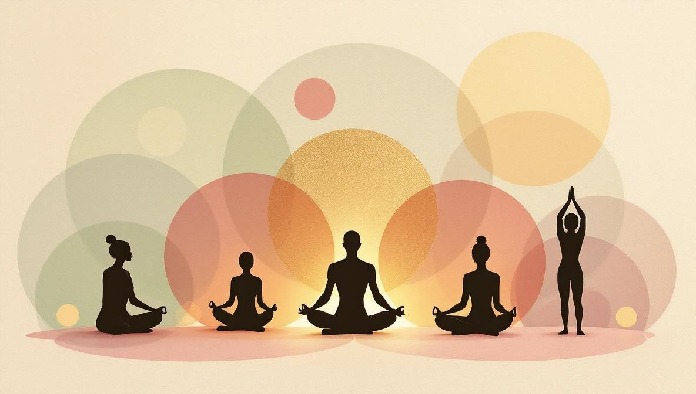

La risposta breve: cosa significa 'olistico'?
La parola 'olistico' deriva dal greco holos, che significa 'intero' o 'tutto'. In ambito salute e benessere, descrive un approccio che considera la persona nella sua totalità — mente, corpo e dimensione emotiva o spirituale — piuttosto che trattare un singolo sintomo in isolamento.
In altre parole: se hai mal di testa cronico, l'approccio medico convenzionale cerca una causa fisica (tensione, pressione, vista). Un approccio olistico pone la stessa domanda, ma considera anche i livelli di stress, le abitudini del sonno, lo stato emotivo, lo stile di vita. Entrambe le prospettive sono utili — non sono opposte.
Questa distinzione è fondamentale. Olistico non è sinonimo di 'alternativo' o 'anti-scientifico'. La parola descrive una filosofia di cura, non una tecnica specifica.
L'origine della parola: da dove viene 'olistico'?
Il termine è entrato nell'uso moderno nel 1926, quando il filosofo sudafricano Jan Smuts ha coniato la parola 'olismo' nel suo libro Holism and Evolution. Smuts sosteneva che i sistemi naturali — organismi biologici, ecosistemi, società — non possono essere compresi riducendoli alle sole componenti individuali. Il tutto è più della somma delle sue parti.
In medicina e nel benessere, questa idea si traduce in un principio pratico: per comprendere la salute di una persona, bisogna guardarla intera — non solo l'organo o il sistema che produce un sintomo. Questo modo di pensare ha radici profonde nei sistemi medici tradizionali come l'Ayurveda (India), la Medicina Tradizionale Cinese e la Naturopatia, che hanno sempre trattato il paziente come un sistema complesso.
Cosa significa davvero un approccio olistico alla salute
Un approccio olistico alla salute si basa su tre presupposti interconnessi:
1. Mente, corpo e dimensione emotiva si influenzano a vicenda. Lo stress cronico ha effetti fisici misurabili: cortisolo elevato, immunità compromessa, sonno disturbato. Al contrario, il dolore fisico genera ansia, ruminazione e ritiro emotivo. Trattare solo uno strato significa ignorare il resto.
2. Il contesto di vita di una persona conta. Relazioni, situazione lavorativa, alimentazione, sonno, storia personale — tutto questo incide sulla salute. Un professionista che non chiede di questi aspetti sta trattando un sintomo senza mappa.
3. La persona è un partecipante attivo, non un paziente passivo. La cura olistica ti chiede di partecipare — di notare i pattern, provare nuove abitudini, essere onesto su ciò che non funziona. Un professionista è una guida, non un meccanico che ti ripara mentre aspetti.
Niente di tutto questo si oppone alla medicina convenzionale. Molti medici, psicologi e infermieri abbracciano principi olistici all'interno di una cornice biomedica — e molti professionisti olistici incoraggiano i loro clienti a mantenere i controlli medici ordinari.

Le principali discipline olistiche
La parola 'olistico' copre uno spettro molto ampio. Ecco le principali categorie, con una valutazione onesta di ognuna.
Pratiche energetiche
Queste pratiche lavorano sull'assunto che il corpo abbia un campo energetico che può essere influenzato dall'intenzione allenata o dal contatto fisico. Includono il Reiki, il ThetaHealing® e il Pranic Healing. Le evidenze scientifiche sono limitate e preliminari. Tuttavia, molte persone riportano riduzioni significative dell'ansia, miglioramento del sonno e rilassamento emotivo dopo le sessioni. Funzionano meglio come strumenti complementari accanto alle cure mediche o psicologiche.
Sistemi di medicina tradizionale
L'Ayurveda e la Naturopatia sono sistemi medici completi con storie centenarie. L'Ayurveda legge la salute attraverso tre tipi costituzionali (dosha) e lavora su dieta, stile di vita, rimedi erboristici e terapie specifiche. La Naturopatia integra approcci di approccio bionaturale — nutrizione, fitoterapia, idroterapia — con un accento sulla capacità di autoguarigione del corpo. Entrambe hanno una letteratura scientifica in crescita, anche se la qualità delle evidenze varia per tecnica.
Sistemi simbolici e interpretativi
L'Astrologia, la Numerologia e l'Human Design offrono framework per la conoscenza di sé. Non pretendono di prevedere il futuro o guarire malattie — forniscono una mappa per riflettere su carattere, pattern e decisioni ricorrenti. Molte persone le trovano utili per dare senso a periodi di cambiamento o per esplorare aspetti di sé difficili da articolare altrimenti. Usati bene, sono strumenti di introspezione.
Approcci relazionali e sistemici
Le Costellazioni Familiari e le Costellazioni Sistemiche lavorano su come le dinamiche familiari e di gruppo influenzano i pattern individuali di comportamento, salute e relazioni. Sviluppate da Bert Hellinger e successivamente ampliate da altri professionisti, sono usate come strumento complementare accanto alla psicoterapia. Non sono un sostituto del trattamento psicologico.
Olistica e medicina tradizionale: non è un'alternativa
Uno dei fraintendimenti più comuni sulla cura olistica è l'idea che sostituisca la medicina convenzionale. Non lo fa — e qualsiasi professionista che lo suggerisca sta travisando il proprio lavoro.
La distinzione utile è tra complementare (usato accanto alle cure convenzionali) e alternativo (usato al posto di esse). La vera pratica olistica è quasi sempre complementare. Una persona che affronta la chemioterapia e riceve anche Reiki non sta sostituendo il trattamento — sta aggiungendo uno strato di cura per il rilassamento e il supporto emotivo.
La comunità medica riconosce sempre più il valore di questa integrazione. Diversi ospedali in Italia e in Europa offrono ora servizi complementari — Reiki, meditazione, massaggi — come parte dei programmi di cure palliative o di supporto oncologico. Le evidenze scientifiche per alcune di queste applicazioni sono in crescita.
Cosa NON è l'olistica: separare la sostanza dal rumore
La popolarità della parola 'olistico' ha attirato una grande quantità di marketing che ha poco a fare con la pratica autentica. Ecco a cosa fare attenzione:
- Promesse di guarigione garantita. Nessuna pratica olistica può garantire un esito medico specifico. Se un professionista afferma di poter curare la tua condizione, non è cura olistica — è pubblicità ingannevole.
- 'Olistico' come sinonimo di spa. Molti centri benessere usano 'olistico' per indicare 'massaggio rilassante con aromaterapia'. Non c'è nulla di sbagliato in questo, ma non è la stessa cosa che lavorare con un professionista formato su un autentico processo personale.
- Consiglio di smettere i farmaci. Qualsiasi professionista che suggerisce di sostituire o interrompere farmaci prescritti senza consultare un medico sta agendo al di fuori del suo ruolo — e potenzialmente causando danno.
- Pacchetti costosi non spiegati. 'Ti servono dodici sessioni prima di vedere qualsiasi risultato, e ognuna costa 200 euro' — presentato senza una spiegazione chiara del perché — è una tattica di pressione commerciale, non un protocollo terapeutico.
Come scegliere un professionista olistico
Non esiste un unico organismo regolatorio per i professionisti olistici nella maggior parte dei paesi, il che significa che la responsabilità di valutare un professionista ricade in parte su di te. Ecco un elenco pratico.
- Formazione documentata. Chiedi dove si sono formati, per quanto tempo e con chi. I professionisti credibili sono trasparenti sulla loro formazione — e curiosi della tua.
- Comunicazione chiara su cosa è e non è la sessione. Prima di prenotare, dovresti sapere: cosa succede in una sessione, quanto costa, quante sessioni sono consigliate e quali risultati sono realistici.
- Recensioni verificate da clienti reali. Cerca recensioni su piattaforme neutrali, non solo sul sito del professionista. Le testimonianze dettagliate e specifiche sono più affidabili degli elogi generici.
- Rispetto per le tue cure in corso. Un professionista olistico affidabile supporta attivamente — mai compete con — qualsiasi cura medica o psicologica che stai ricevendo.
- Nessuna pressione ad acquistare in anticipo. La prima sessione dovrebbe stare in piedi da sola. Se un professionista ti spinge a impegnarti in un lungo pacchetto prima di aver provato una singola sessione, è un segnale d'allarme.
Su Holistic Unity, tutti i professionisti sono verificati prima di poter pubblicare i loro servizi. Puoi leggere il loro percorso, leggere le recensioni e prenotare una prima sessione senza alcun impegno per una serie.
Cerchi un professionista olistico verificato?
Holistic Unity ti mette in contatto con professionisti verificati in tutte le principali discipline olistiche — per sessioni online, ai tuoi ritmi.
Esplora tutte le disciplineFonti e riferimenti
- Definizione OMS di salute: «La salute è uno stato di completo benessere fisico, mentale e sociale, e non semplicemente l’assenza di malattia o infermità» — Costituzione dell’Organizzazione Mondiale della Sanità, 1948 — who.int.
- Istituto Superiore di Sanità (ISS) — Medicine Non Convenzionali: contesto istituzionale italiano per le pratiche complementari — iss.it.
- Legge italiana sulle professioni non regolamentate: Legge 14 gennaio 2013, n. 4 («Disposizioni in materia di professioni non organizzate») — Gazzetta Ufficiale.
- Norma UNI 11713:2018: «Attività professionali non regolamentate — Operatore olistico», pubblicata dall’Ente Italiano di Normazione (UNI) — store.uni.com.
- Modello bio-psico-sociale: Engel GL. «The need for a new medical model: a challenge for biomedicine.» Science. 1977; 196(4286): 129-36 — articolo fondativo dell’approccio integrato alla salute.
Domande frequenti
Cosa significa esattamente 'olistico'?
'Olistico' deriva dal greco holos (intero). In ambito salute e benessere, indica un approccio che tratta la persona nella sua totalità — mente, corpo e dimensione emotiva — invece di un singolo sintomo isolato.
L'olistica è scientifica?
Dipende dalla disciplina. Alcune pratiche olistiche (certi approcci nutrizionali, lo yoga terapeutico) hanno evidenze scientifiche solide. Altre (Reiki, ThetaHealing®) hanno ricerche preliminari ma basi empiriche ancora limitate. Il termine 'olistico' descrive un orientamento filosofico verso la cura integrale della persona, non un metodo scientifico specifico.
Qual è la differenza tra olistica e approccio bionaturale?
La approccio bionaturale viene usata al posto di quella convenzionale. L'olistica, nella sua accezione corretta, è complementare: si affianca alle cure mediche senza sostituirle. Un professionista olistico serio non inviterà mai a smettere un trattamento medico prescritto.
Chi può praticare le discipline olistiche?
Non esiste un unico albo professionale per tutte le discipline olistiche in Italia. Ogni disciplina ha i suoi percorsi formativi e le sue associazioni di riferimento. È importante verificare che il professionista abbia una formazione documentata, lavori con trasparenza sugli obiettivi della sessione e non faccia promesse terapeutiche che esulano dalle sue competenze.
Le sessioni olistiche online funzionano come quelle in presenza?
Per molte discipline sì. Il Reiki a distanza, le sessioni di ThetaHealing® online, le consulenze di astrologia e Human Design funzionano pienamente in formato video. Altre pratiche, come certi massaggi o trattamenti corporei, richiedono necessariamente la presenza fisica.
Come scelgo il professionista olistico giusto per me?
Verifica: 1) che abbia una formazione documentata e tracciabile, 2) che comunichi con chiarezza cosa fa e cosa non fa, 3) che non prometta guarigioni o risultati garantiti, 4) che abbia recensioni verificate da clienti reali. Diffida di chi usa linguaggio infallibile o ti spinge ad acquistare pacchetti costosi alla prima sessione.